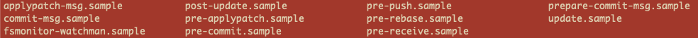

I am aware of the existence of Git Hooks for quite a while but haven't really tried it out myself until today. Although it looks a simple thing to do, I did come across some interesting issues and had to do a little bit research. So why not share what I learned with the internet?
First, I created one simple Python script, encrypt.py, in which a function called encOnePassword is defined.
import hashlib
def encOnePassword(rawPassword: str) -> str:
"""Encrypt one string by using SHA256 with *Salt*
Args:
x (string): Any password from user input
"""
salt = "This is the SALT"
# if I accidentally changed th salt
# salt = "This is not the SALT to use!"
return hashlib.sha256((salt + rawPassword).encode('utf-8')).hexdigest()
Then I created another simple test script test_encrypt.py.
import pytest
from encrypt import encOnePassword
def test_encOnePassword():
assert encOnePassword(
"1234567") == "9f9df71798d99794f643f7282d2b98c20a538ee0d307aa1b3d2387635c6ae52f"
assert encOnePassword(
"ABC_DEF") == "90da2f1901ff71c8ffdb314ce2621180d0169492ea9343bc1a9bb86bbfecd6b6"
Next, I ran the git init command and initialized a git repo. But when I looked into the .git/hooks/ directory, there are a bunch of codes in there already! Well, that's something I didn't expect at all.

So I made a directory call backup and moved all these samples into it, so they won't interfere with what I plan to do next. Then I created a shell script called pre-commit.sh.
#!/bin/bash
current_branch=`git branch |grep '*' |sed 's/* //'`
if [ "$current_branch" == "master" ]; then
echo "Running tests pre-committ"
python -m pytest test_*.py
if [ $? -eq 0 ]; then
echo "Tests all passed!"
exit 0
else
echo "Tests failed ... Committ not successful!"
exit 1
fi
fi
*Here I referenced the codes from Giacomo's blog and changed it a little to fit my needs.
When all of these are in place, I made the initial commit and it went smoothly. Then I changed the salt in the encOnePassword function, to mimic an unintentional bug, and commit the code again. I though the pre-commit hook would throw out an error and interrupt the commit, but IT DID NOT! What a surprise!
After a little search on stackoverflow,I found this answer and did two things:
- Changed the script name from
pre-commit.shtopre-commit(yes, remove the.shpart.) - Made the script an executable one by running
chmod +x pre-commit.
Now, finally, the hook is working as I expected and it prevented me from committing bad codes to the master branch! Hooray!